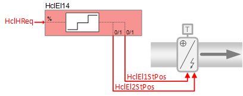
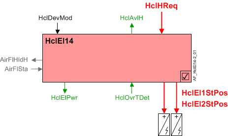
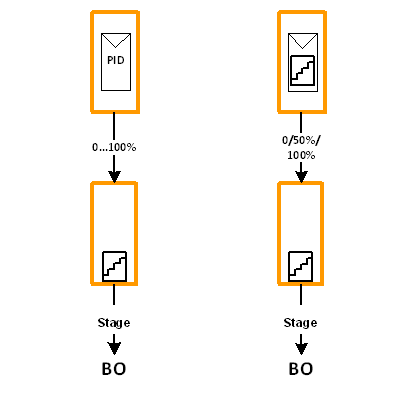

电加热线圈两级，两个二进制输出（HclEl14）
 | 该应用程序功能运行2-stage电加热线圈。 这些阶段是根据接收到的供暖请求信号（来自房间控制器）计算的。 有一个可选的二进制输入用于过热检测。 该应用程序函数 NOT 可用于： DXR2x09T. |
Required elements and how to configure them:
元素 | I/O | 信号类型 |
|---|---|---|
HclEl1StPos "Heating coil electric position first stage " | On-board output, Heating coil valve position | Electric 2-stage Normally open |
 WARNING
WARNING

电热线圈需要安全限温器
电加热线圈安装不当会导致火灾并造成生命和财产损失。
- Install a high temperature cut-out switch on all electric heating elements.
- Ensure that all wiring and installation conform to applicable safety codes and regulations.
Function
下图显示了与此应用程序函数关联的 BACnet 对象。主要信号流程总结如下：
加热线圈加热要求（HclHReq）被接收并处理为双电加热线圈台位置（HclEl1StPos, HclEl2StPos).
基本功能：接受来自关联房间控制器的请求信号并通过设备模式逻辑开关传递；将结果作为命令输出到控制设备的 BACnet 对象。

| 命令或请求（或相关） |
| 条件或状态或可用性的通知 |
| 设备模式 |
| 互锁（内部信号，不是 BACnet 对象；有关其他信息，请参阅互锁部分） |


Interlocks
房间自动化联锁是协调 HVAC 设备之间交互的内部信号。它们在 ABT 站点或 Web 界面中不可见，但与它们关联的参数可见。有关影响联锁功能的参数的提示，请参阅注释列。
信号 | 类型 | 方向 | 描述 | 评论 |
|---|---|---|---|---|
AirFlSta | 布尔值 | In | 气流状态 | 电热线圈无相关参数。 AirFlSta 是硬编码的。 |
AirFlHReq | 布尔值 | 出去 | 气流加热要求 | 有关名为“...AirFlHReq”的参数，请参阅配置部分。 |
AirFlHldH | 布尔值 | 出去 | 保持气流以供加热 | 有关名为“...AirFlHldH”的参数，请参阅配置部分。 |
AirManOff | 布尔值 | In | 空气手动关闭 |
|
Binary control of two electric heating coils for 2-stage operation:为了响应加热需求，加热线圈电气位置对象（HclEl1StPos / HclEl2StPos）在/off上运行，以将室温控制在设定点。它们还可以被命令响应外部触发器以实现特殊模式，例如预热或冷却或安全条件。
电加热线圈接收加热需求信号（HclHReq）的百分比，并将其转换为应打开的级数。
Note
没有用于打开和关闭线圈的延迟开/关定时器。
Note
这个AF不进行循环控制；它的主要目的是运行命令。循环控制进程（对于此 AF）在“房间”AF 中进行管理，该房间与此 AF 协作以命令终端设备。
Device mode:设备模式的输入信号是多状态值。
HclDevMod支持以下状态：
- Off
- Control mode (modulation)
- Fully open
Heating available status:当加热线圈可供加热时，二进制输出信号为“Heating coil available for heating" (HclAvlH）将为“是”（可用）。HclAvlH系统使用它来调节加热资源。例如，如果有加热请求，但加热线圈不可用，因为它已经处于最大容量（因为设备模式完全打开），则HclAvlH将发出“否”信号，并且将激活温度控制序列中的下一个可用加热资源。
要使加热可用状态为“是”，设备模式必须等于“控制模式”（调制）。
High temperature cut-out switch:该AF具有加热线圈过温检测输入（HclOvrTDet）来自高温断路开关。当开关激活时，线圈被命令以设备保护优先级关闭，并向气流源发送信号以保持/维持气流。计时器可防止气流源停止，直至计时器到期。
范围EnOvrTDetIn必须设置为 1：是，切断开关才能发挥作用（请参阅Configuration).
Electric power usage:提供电加热线圈的标称电力使用量，用于能源监控以及与其他设备的协调。功率使用量计算如下（线圈关闭时使用零功率）：
当一级电热线圈开启时：HclElPwr = NomElPwr / 2
当两个阶段都打开时： HclElPwr = NomElPwr
Configuration
 Parameters
Parameters
描述 | 范围 | 默认值 |
|---|---|---|
Nominal electric power | NomElPwr | 0.4 [kW] |
Enable overtemperature detector input 0:No | EnOvrTDetIn | 0:No |
High outside air temperature lockout | ||
Enable lockout heating coil at high outside air temperature 0:No | EnLockHclTOaHi | 0:No |
Lockout heating coil at high outside air temperature | LockHclTOaHi | 13.0 [°C] |
Outside air temperature hysteresis for lockout heating coil | HysTOaLockHcl | 1.0 [K] |
Interlocks | ||
Switch-on point for air volume flow hold heating | SwiOnAirFlHldH | 33 [%] |
Hysteresis for air volume flow hold heating | HysAirFlHldH | 16 [%] |
Switch-off delay for hold signal for air volume flow heating | DlyOffAflHldH | 30 [s] |
Switch-on point for air volume flow heating request | SwiOnAirFlHReq | 33 [%] |
Hysteresis for air volume flow heating request | HysAirFlHReq | 16 [%] |
Switch-on delay for air volume flow heating request | DlyOnAirFlHReq | 0 [s] |
Internal settings – do not change | ||
Temperature unit | TUnit | [°C] |
Temperature difference unit | TDiffUnit | [K] |
Interface
界面 | 描述 | 类型 | 参考号 | 拥有者 |
|---|---|---|---|---|
HclEl1StPos | Heating coil electric position first stage 0:Off | BO | ◉ | Room segment / Device |
HclEl2StPos | Heating coil electric position second stage 0:Off | BO | ◉ | Room segment / Device |
HclOvrTDet | Heating coil overtemperature detector 0:Off | BI | ◉ | Room segment / Device |
HclDevMod | Heating coil device mode 1:Off | MPrcVal | ● | - |
HclHReq | Heating coil heating request | ACalcVal | ● | - |
HclAvlH | Heating coil available for heating 0:No | BCalcVal | ● | - |
HclElPwr | Heating coil electric power | ACalcVal | ● | - |
Engineering and commissioning
故障排除提示：为什么线圈处于高优先级关闭状态？可能是因为没有气流。检查风扇或阻尼器。可能是因为高温安全输入。 （确认安全开关的功能。）
设计工程师可以选择电线圈的输出类型。创建每种输出类型的逻辑嵌入在控制器中。有两种类型的输出：
- PID loop control creates 0 to 100% analog heating demand signal to drive a staged electric heating coil
- Staged loop control creates 0 / 50 / 100% staged signal to drive a staged electric heating coil
